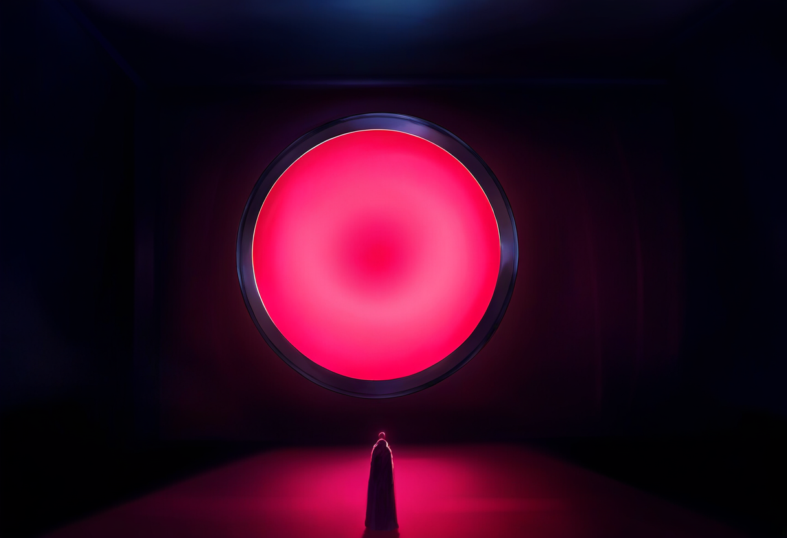
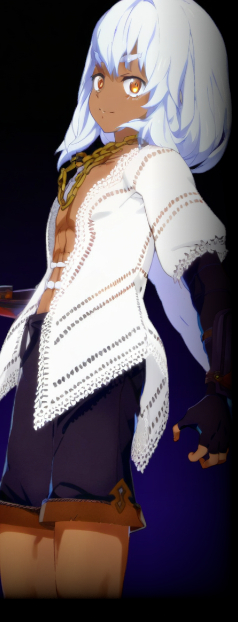
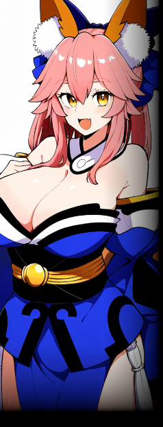

それぞれの世界に存在する、世界の境界線。
その形態は多様で、空間に開いた孔、古代の建造物、または神隠しのような不思議な現象など、異世界に様々な形で現れる。
そもそもムーンゲートが開いていない世界も存在するかもしれない。
異世界同士は、科学技術・文化の水準・辿ってきた歴史など、さまざまな点において差異が存在する一方、基本的な物理法則については大抵の場合共通している。
その中でも、魔法・超能力・未知の科学技術など、他の世界では説明のつかない法則が存在するケースがまま見られる。
こういった特殊な概念を操る者たちは、他の世界から見ると「現実を侵蝕する・奪う者」という意味で【（ワールド）テイカー】と総称される。
ムーンゲートおよび異世界の存在は社会秩序に混乱をもたらすケースが多いため、存在が一般に公開されているか否かはその世界によって異なる。
ある世界ではムーンゲートの存在が公然と知られており、それに伴うリスクや機会が議論の的となっている一方、別の世界ではその存在が極秘扱いされ、ごく一部の権力者や研究者のみが知る事実となっている。
ムーンゲートは単なる物理的境界ではなく、文化や価値観、さらには社会そのものに深い影響を及ぼす存在として、多くの世界において特別な意味を持つこととなるのだ。
ワールドテイカーとは、異世界の境界を越えて異なる世界から訪れ、その世界の法則や常識を破壊、もしくは大きく揺るがす存在を指す。
実際は単に「テイカー」と通称されることの方が多い。
彼らはムーンゲートを通じて異世界に現れ、その特異な力や技術を駆使して活動する。
テイカーが持ち込むものは異世界において非現実とされるものが多く、その能力によって現地の社会や秩序に大きな影響を与えることがある。
彼らの力はしばしば現地の権力者や一般市民にとって脅威となり、または大きな利益をもたらす可能性があるため、多くのテイカーは異世界において複雑な評価を受ける。
ある世界では救世主や英雄として崇められる一方、別の世界では災厄の根源として恐れられ、排除の対象となることもある。
テイカーが異世界に与える影響は、物理的な破壊だけでなく、文化的、社会的な変革も含まれる。
例えば、彼らが持ち込む技術や知識が現地の科学や産業に革命をもたらすことがある。
その一方で、テイカーの存在が現地の宗教や価値観を脅かすこともあり、これが社会的な混乱を引き起こす原因となることも少なくない。
異世界の知識や技術を逆に持ち帰る者もいるようだ。
「境界を越える者」としての特異な立場に置かれることになるテイカーだが、
そもそも"越境"が意図的なものとは限らず、「最後の記憶ではトラックに轢かれたはずが気付くとこんな姿とこんな能力を持ってここにいました」という者も多い。
ムーンゲートとテイカーの発生数は近年増加傾向にあるというが……。
|
 |
▼セスタス
元・拳奴の少年。イルミンスールに現れた最初の越境者であり、元の出身はイルミンスールとは別の世界。
異能によっても説明がつかない規格外の身体能力を誇る。獣（ライオン？）の形質を持っており、五感も極めて鋭い。
命賭けの勝負に執念を燃やすバトルジャンキー。強者との死闘を至上の娯楽とし、刺激のない安穏とした日々を嫌う。
「良いよ、闘ろっか。ギブアップはナシで良いよね？」 |
|
 |
▼タマモ
神出鬼没な謎の美女。
ハイテンションにしてマイペース。一見すると言動は出鱈目だが人懐っこく、存外気立ては良い。
とある異世界にてセスタスと出会い、彼を籠絡すべく接近するが逆に惚れ込んでしまう。
「謂れはなくともみこーんと参上☆ 三千世界の彼方から、良妻狐のデリバリーにやってきました♥」 |